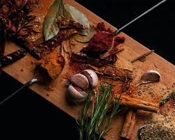

Seasonal Ingredients Spotlight
Learn about the best ingredients for each season and how to incorporate them into your cooking. Eating seasonally not only ensures the best flavors but also supports local agriculture and sustainable eating practices.
Benefits of Seasonal Eating
Seasonal ingredients are often more flavorful, nutritious, and affordable. By eating seasonally, you'll enjoy a varied diet throughout the year and support local farmers and ecosystems.
Seasonal Highlights
- Spring: Asparagus, peas, strawberries
- Summer: Tomatoes, zucchini, peaches
- Fall: Pumpkin, apples, Brussels sprouts
- Winter: Citrus fruits, root vegetables, kale
Seasonal Dishes to Try